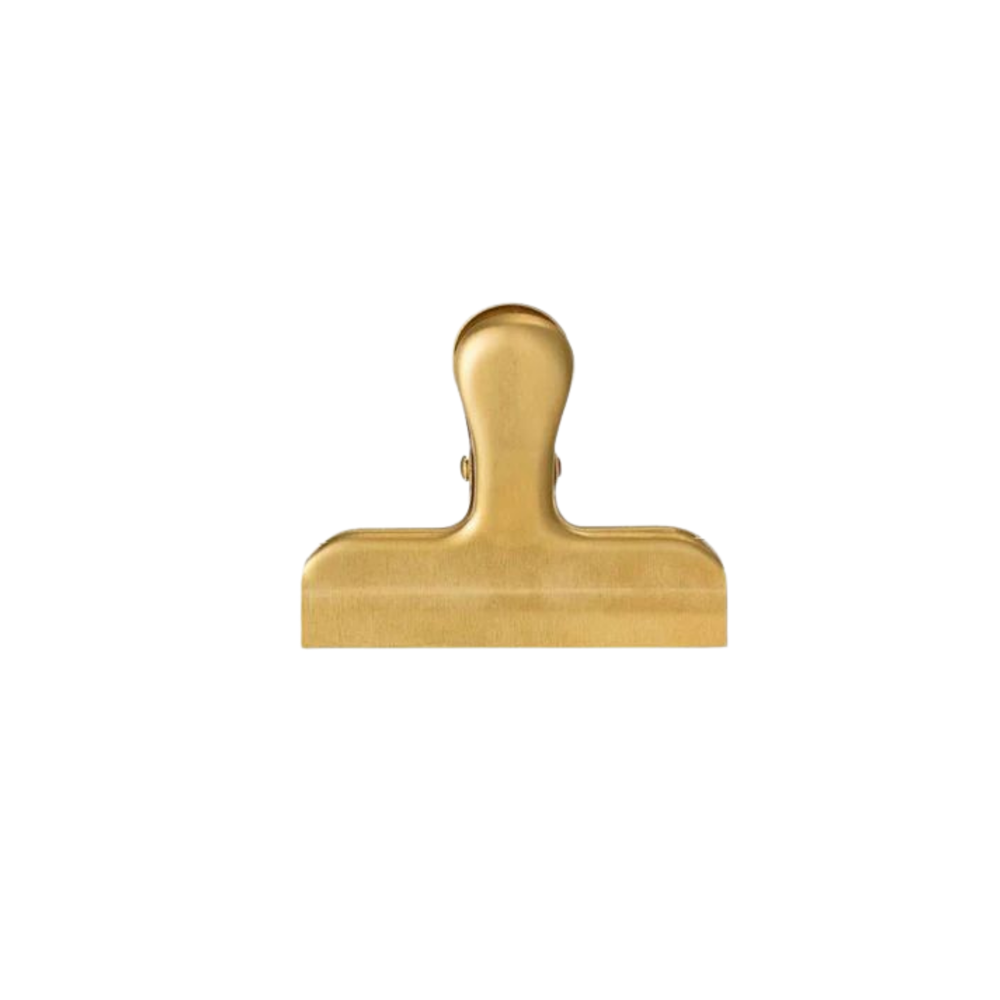
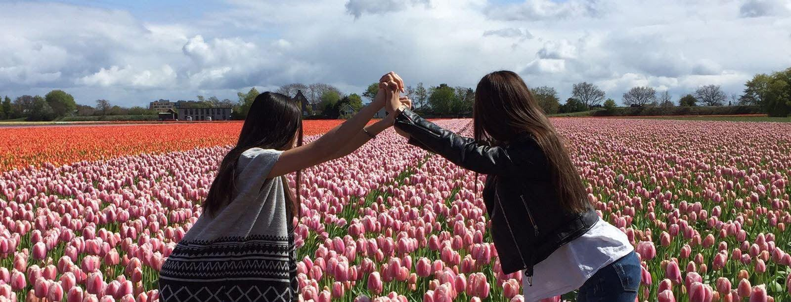
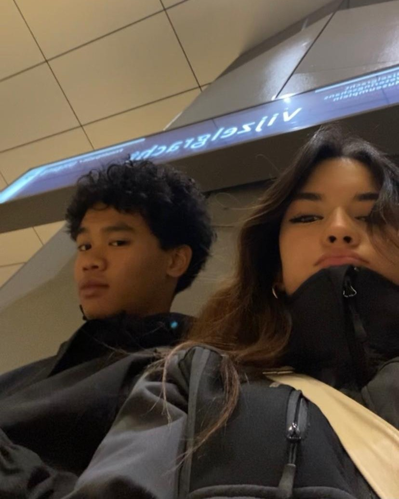
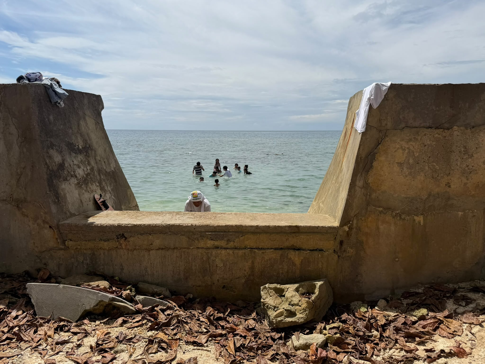
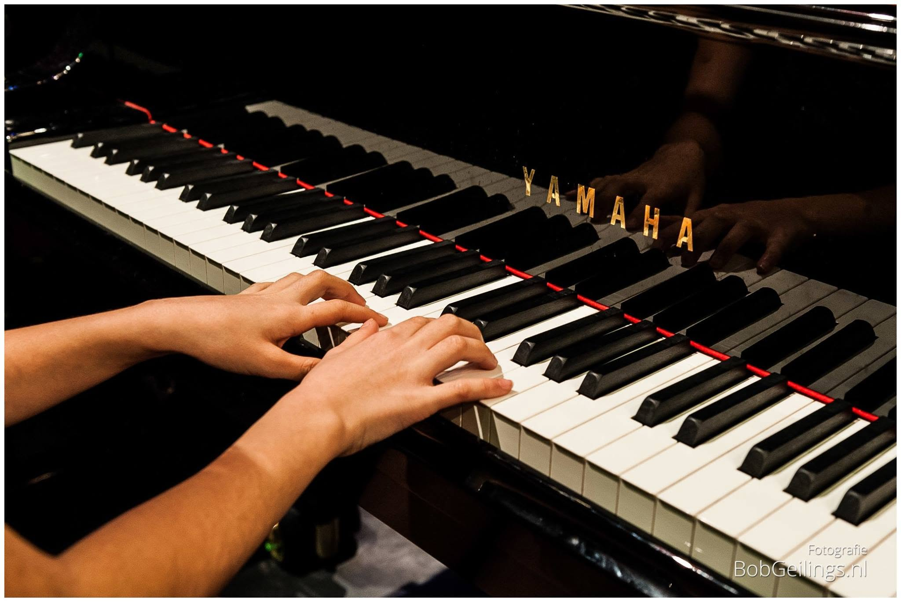
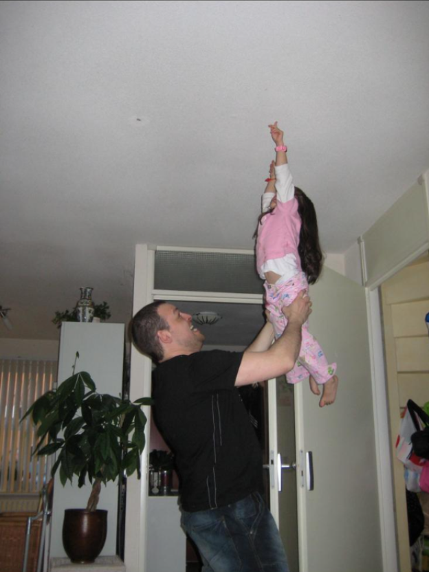
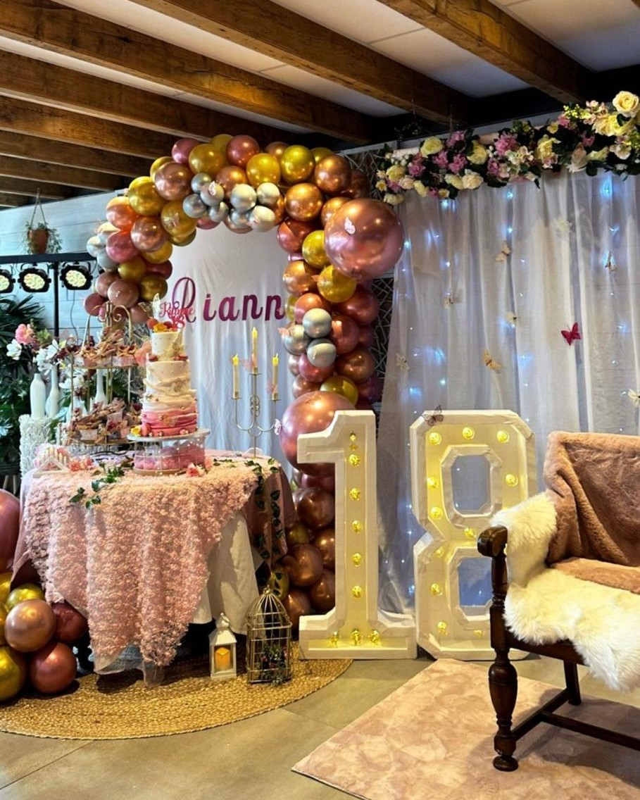

memories
These are little moments from my life, each connected to a song.
Whenever I hear that song again, it takes me right back to that memory
and the way it felt in that moment.
Memory 1
Memory 2
Memory 3
Memory 4
Memory 5
Memory 6
Memory 7
Memory 8


Summer 2014

Relationship Song

Reminder of Philippines

First Piano Song
Summer 2014
Relationship Song
Reminder of Philippines
First Piano Song

Childhood Song

18th Birthday
Beginning of Business
Childhood Filipino Parties
Childhood Song
18th Birthday
Beginning of Business
Childhood Filipino Parties
Summer 2014
Relationship Song
Reminder of Philippines
First Piano Song
Childhood Song
18th Birthday
Beginning of Business
Childhood Filipino Parties
×
Outside
Ellie Goulding
This memory brings me back to summer 2014, when me and my niece went
on vacation together for the very first time. This song always
played on the radio when we were...
×
Best Part
Daniel Caesar
This memory feels like replaying a scene in my head over and over
again, but in a beautiful way.
×
Raining In Manila
Lola Amour
This one reminds me of a deeper emotional memory and a song that
says a lot without needing much.
×
River Flows In You
Yiruma
This memory is more reflective and makes me think about slowing down
and just taking things in.
×
Yes Sir I Can Boogie
Baccara
This memory feels dreamy and distant, like a moment that stayed in
my head long after it passed.
×
Dancing In The Moonlight
Toploader
This song was the song we danced to at my 18th birthday party. A
18th birthday party is a big deal in the Philippines, they call it a
debut.
×
Pluto Projector
Rex Orange County
This memory feels personal and grounding, like something quiet but
really meaningful.
×
On the Floor
Jennifer Lopez
This memory feels personal and grounding, like something quiet but
really meaningful.